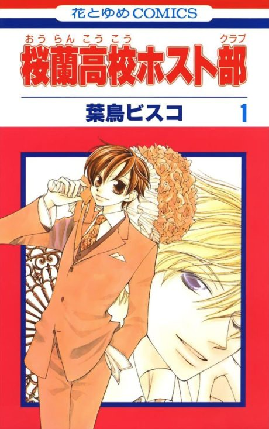

Ouran High School Host Club
桜蘭高校ホスト部
After the anime, read the manga from Chapter 36.
8.0AniList score
—Animeter, no votes yet
26episodes
Anime finished. Where does the manga pick up?
Start at Chapter36
The anime follows the manga to about chapter 35 and then ends with an anime-original story, so start at chapter 36 (volume 8). The anime also skips and condenses some chapters.
13597 end
Season 1Start reading here